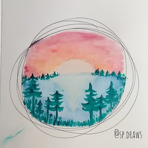
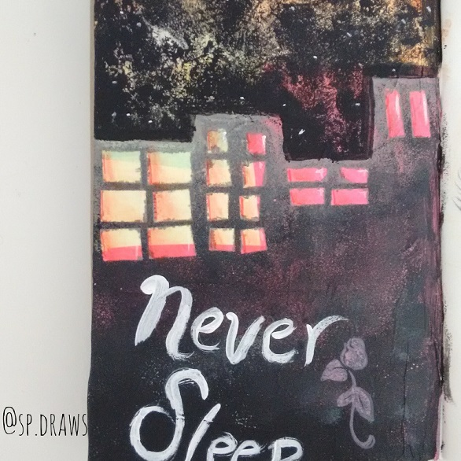
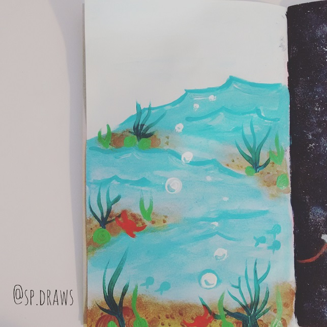
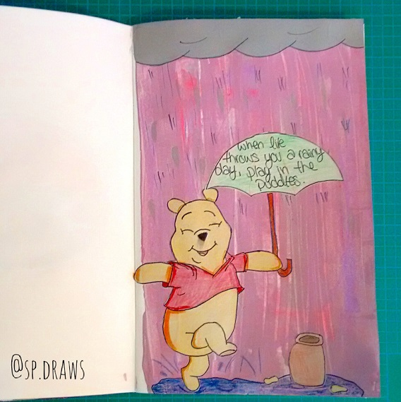
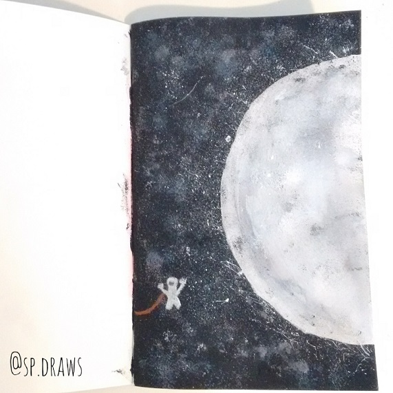
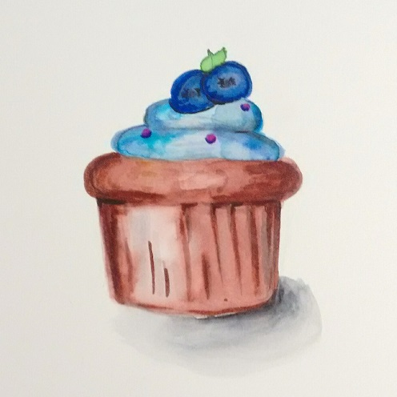
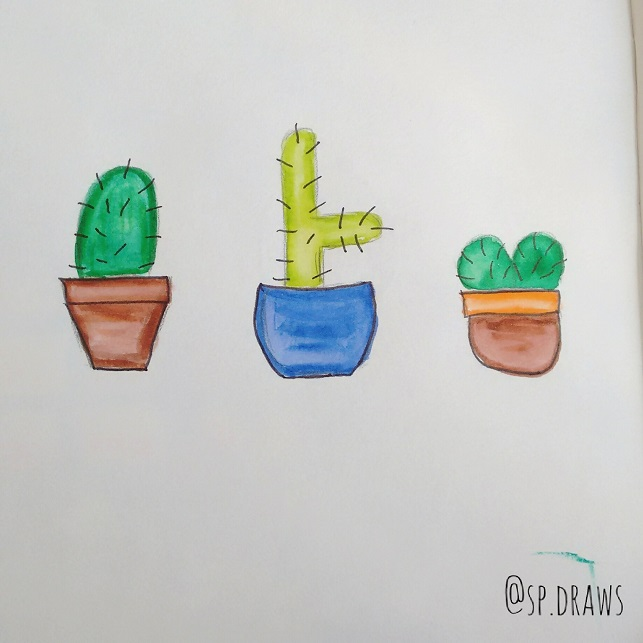

Art Projects
HOMESunset
2017
Watercolour sunset, acylic pine trees.
The City Never Sleeps
2017
Acrylic, applied with sponges as well as brushes, for texture.
Under the Sea
2017
Under water scene, painted in acrylic and watercolours.
Winnie the Pooh
2017
Drawing of Winnie the Pooh, with acrylic textured background, and quote.
First Steps
2017
Combination of acrylic and watercolours, as well as conte and various medias.
Cupcake
2017
Drawing of a cupcake, using watercolour brush pens.
Cacti
2017
small drawings of cacti using watercolours and a black pen.
Other
Paintings, Mixed Media and Craft projects.Wolfe Lake
August 2015

Painting of the reflections on Wolfe Lake
Pathway (Copy of Leonid Alfremov)
April 2015

My first painting with a palette knife.
Marbled Polymer Clay Bowls
May 2015

Marbled bowls made out of polymer clay.
Tree
Friday 5th, 2015

A painting of a tree that I made for a school auction. It sold for $48!
Heart String Art
May 10th 2015

I made this string art for my mom on Mother's Day. Paint a peice of wood and hammer in nails in a shape or pattern you like. Then, you just choose one or more colours of thread and weave it around the nails.
Orange Blumen Painting
May 10th 2015

This is a painting of an orange blumen that I made for my mom for Mother's Day.
Water Puzzle
January 2015

First paint a regular 8 1/2" x 11" sheet of paper with a very basic watercolour design. Then cut into squares and glue it back together again in a different pattern.
Melted Crayon Art
November 2014

Hot glue crayons to the top, and melt them with a hair drier.
Mixed Media Art
November 2014

Reused Canvas
Gradient
November 2014

Acrylic paint on canvas